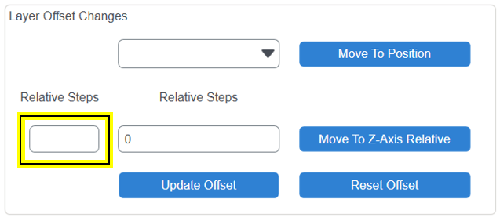
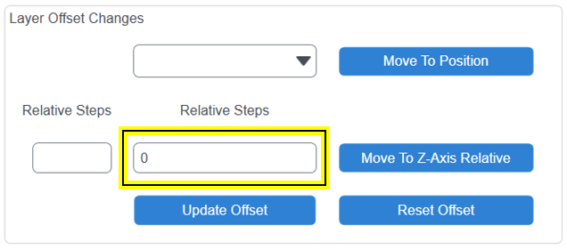
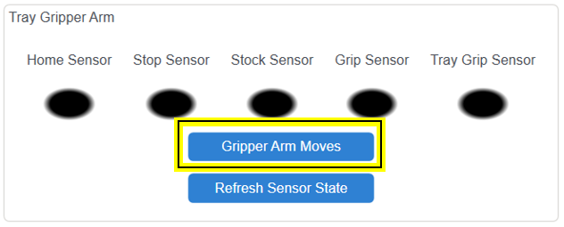
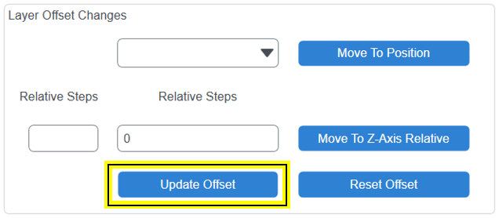

This topic includes information about how to update the tray gripper layer offset.
Safety Reminder
Servicing the DxI 9000 instrument involves potential risks for pinch and puncture, electrical shock, and exposure to hazardous materials. You must mitigate these risks by taking appropriate countermeasures. See
Safety for more information.
Prerequisites
Before you begin this alignment procedure:
If you must make changes to the instrument's hardware, you must complete those changes before you prepare the instrument for adjustments and alignments.
You must verify that alignments have previously been completed on the instrument. To verify, in the Machine Control App go to
Menu > Prototype Alignment to open the Prototype Alignment page and to verify the
Finalize Instrument Alignments button is
GRAY in color. If the button is
BLUE in color, do not complete this procedure. Instead, you must first complete manual alignments.
The Tray Gripper Must Be in the Home Position
Before you adjust and align DispoTip Stocker components, the tray gripper must be in the home position. See
Homing the Tip Tray Gripper for more information.
Note: The Y and Z axes for the tray gripper are measured in
horizontal steps and
vertical steps.
A
horizontal step is a unit of distance understood by the Machine Control App and the instrument hardware and software. The gripper moves up and down along the horizontal (Y) axis approximately 1 cm (0.39 in.) for every 167 horizontal steps.
A
vertical step is a unit of distance understood by the Machine Control App and the instrument hardware and software. The gripper moves up and down along the vertical Z-axis approximately 1 cm (0.39 in.) for every 148 vertical steps.
The number of trays and tips will influence movement and distance.
Note: The tray gripper must not collide with other components of the DispoTip Stocker or the cabinet. A collision will damage or misalign the tray gripper.
Updating the Tray Gripper Layer Offset
Perform this procedure to update the tray gripper layer offset.
If the instrument is in a
GREEN (Ready) status, in the Console App select the
SYSTEM RUNNING button and go to
Stop > Pause to enter the instrument into a
YELLOW (Paused) status.
In the Console App go to
Menu > Tools > Diagnostics > Service Diagnostics.
Select
Start Session to enter the instrument into a
BLUE (Maintenance) status.
Go to
Disposable Tip Supply Diagnostics Menu > Tray Gripper Diagnostics to open the Tray Gripper Diagnostics page.
Figure 128: Tray Gripper Diagnostics
In the Layer Offset Changes area, select the position to reset.
Select
Move To Position. Wait until the operation is complete. The tray gripper's current position, in steps, will be displayed in the first
Relative Steps box.

In the second
Relative Steps box, type the number of steps to move the tray gripper.

Select
Move To Z-Axis Relative. Wait until the operation is complete. The tray gripper's current position, in steps, will be displayed in the first
Relative Steps box.
In the Tray Gripper Arm area, select
Gripper Arm Moves to open and close the tray gripper arms.

If the tray gripper grips the tray, select
Gripper Arm Moves to leave the tray gripper arms open.
If the tray gripper does not grip the tray
In the second
Relative Steps box, type the number of steps to move the tray gripper.
Select
Move To Z-Axis Relative. Wait until the operation is complete. The tray gripper's current position, in steps, will be displayed in the first
Relative Steps box.
In the Tray Gripper Arm area, select
Gripper Arm Moves to open and close the tray gripper arms.
Repeat these steps until the tray gripper grips the tray, and then select
Gripper Arm Moves to leave the tray gripper arms open.
In the Layer Offset Changes area, select
Update Offset to save the value displayed in the first
Relative Steps box.

Ending an Adjustments and Alignments Session
In the Console App go to
Menu > Tools > Diagnostics > Service Diagnostics.